A rule is a flat length of wood, plastic, or metal divided or graduated into a number of spaces with specific units of measurement that can be used to measure the dimensions of an object. Rules are available in the English or metric measuring system. It is one tool that is very common in the mechanical shop area that is not of a high precision. When tolerances of fractional dimensions are required, the steel rule is used. The most commonly used steel rule is the 6" rule. It also comes in various widths and thickness to meet varying requirements.
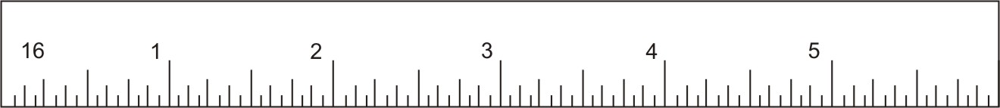
Figure 1: RuleA scale is also a strip similar to rule but graduated in representative units that can be used to check or lay off representative measurement. Scales are generally used by draftsman for drawing to certain scale size.
English system rulesEnglish system rules are usually 6 or 12 inches long. The English system rules use fractional divisions. The fractional divisions for an inch are found by dividing the inch into equal parts - halves (1/2), quarters (1/4), eighths (1/8), sixteenths (1/16), thirty-seconds (1/32), and sixty-fourths (1/64) Precision machinist rules have 1/64-inch divisions. Some rule only use the fine scale divisions at one end of the scale.
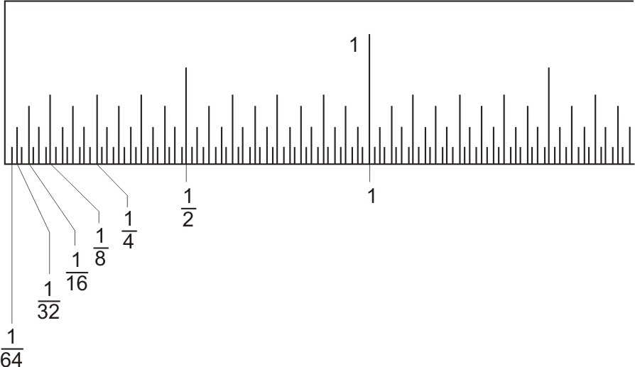
Figure 2: Fractional parts of an inch (magnified)
A 1/64" graduate scale means that in a 1-inch length, there are 64 lines dividing the 1-inch length. These are the smallest graduations on the rule, therefore making the accuracy of a steel rule 1/64". The rule is only intended to measure to 1/64" accuracy.
The next set of graduations is the 1/32" scale that divides a 1-inch length into 32 divisions. A 1/32 division is equal to 2/64 divisions.
The 1/16" scale divides a 1-inch length into 16 divisions and is a total of 4/64 or 2/32 graduations.
The 1/8" scale divides a 1-inch length into 8 equal divisions and is a total of 8/64, 4/32, or 2/16 graduations.
All metric measures are expressed in mm. The metric scales use decimal divisions. Meters are typically divided into centimeters (1 /100 meter) and millimeters (1 /1000 m). The typical metric rule is divided into 0.5-millimeter graduations. Every tenth mark is equal to 1 centimeter. Reading the metric rule is easier than the English rule because it does not use fractions. The metric rule is generally 100 millimeters long. Thus 1.5 meters (m) would be 1500mm.
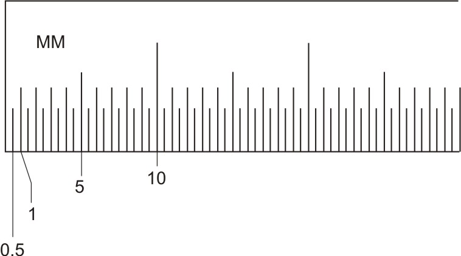
Figure 3: Graduation on metric rule (Magnified)
a) Select a steel rule with graduations within the required limits of accuracy.
b) Remove burrs from the workpiece. Clean the rule and work.
c) Determine whether the measurement is free of observational, manipulative and observer bias.
d) Align the steel rule so the scale edge is along the line of measurement. If necessary, use a support piece to ensue that the rule edge remains along the line of measurement.
e) Position the steel rule with the end held lightly against the reference point.
Read the measurement at the measured point. For greater precision in measurement, or if a great number of measurements are required use a magnifier.
When taking measurements, hold the rule so that the scale graduations are as close to the measurement being taken as possible. To get the full accuracy out of a rule, it is important to use it correctly.
Never use the end of the rule to align with the edge of the work for a measurement. The end of a rule is often rounded off or become worn from misuse, thus the end of the rule will no longer be at a `zero' position and a true measurement will not be made. Instead the internal divisions of the rule should be used.
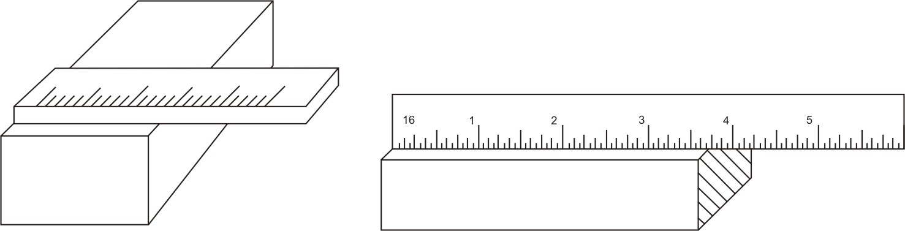
Figure 4: a, b - Incorrect placement of ruleTo overcome this, use a main graduation apart from zero as a reference point on the rule. Precision and reliable measurements are possible this way. With the graduation directly on the edge of the work and by not using the end of the rule, wear is inconsequential.
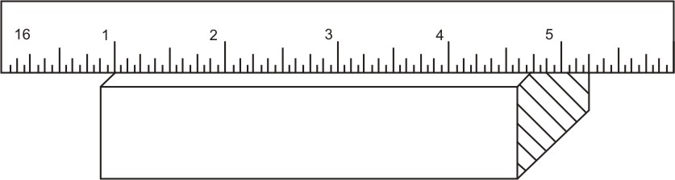
Figure 5: Correct placement of a ruleEven if when measuring from the edge of a workpiece, hold a block for support next to the edge, then press the ruler against the block.
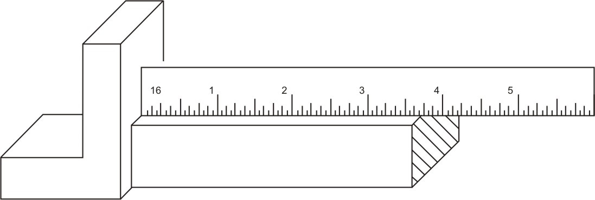
Figure 6: Measuring from the corner
If the end of the rule is worn off it will not assure an accurate measurement.
When measuring a length, the rule must be kept in a straight line parallel to the centerline of the work. If it is tilted, the measurement will be longer than the actual part
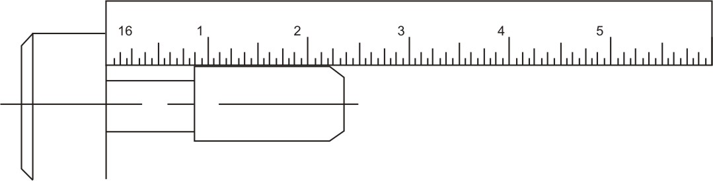
Figure 7: a - Correct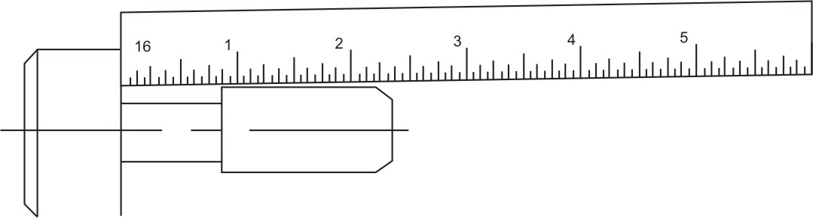
Figure 7: b - IncorrectUse a pair of blocks and a ruler of sufficient length when measuring the outside diameter of a circular workpiece. Read the measurement at the inside edges of the blocks.
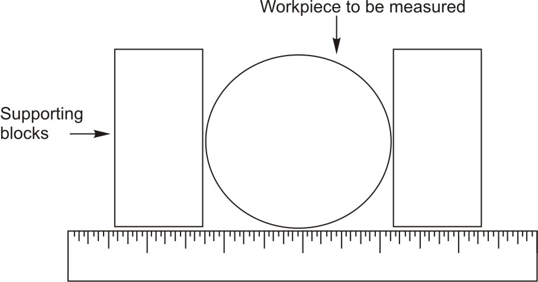
Figure 8: Measuring an external diameterRead the inner measurement of the workpiece in the following manner.
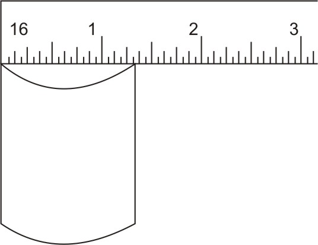
Figure 9: Measuring an internal diameter
Other important factor in using the rule is to be aware of parallax. Parallax is the change in apparent position when an object is viewed from two separate points. For example, if you hold up two fingers in line with your nose and move your head from side to side while viewing them, you will notice an exchange in the relative position of the fingers as you change your point of view. This is parallax. This is an observation error from the person measuring or holding at the part in relation to the part being held.
The figure shown below is an incorrect way of measuring, and parallax is greatly increased because of the thickness of the rule. The graduations do not come in direct contact with the work. The arrows pointing to the right and left will cause parallax, and even though the arrow pointing straight up is the correct way to view the rule, there is a chance for error in reading due to the thickness of the rule.
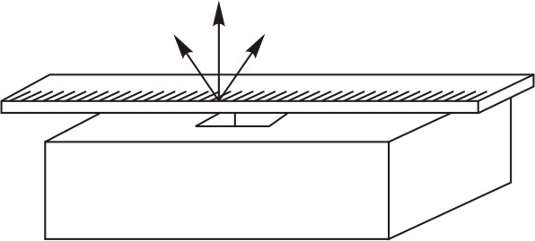
Figure 10: Incorrect - Rule Lying FlatThe figure shown below is used with the rule on edge. As can be seen, the graduation comes in contact with the work which is the correct way of measuring. Although the arrows pointing to the right and left will cause an improper reading, it will not be as great an error as when used like the figure on the left. The proper way is to view the graduation straight up as the center arrow. To ensure that consistent, accurate readings are taken from the scale, the operator must be directly in front of the scale and the measured mark to obtain an accurate consistent measurement.
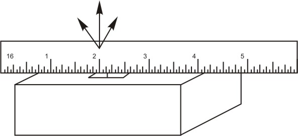
Figure 11: Correct - Rule Standing on EdgeFor utmost precision, hold the ruler on its edge against the work surface. This way, the ruler's markings meet the workpiece surface and you avoid mismarking the workpiece due to an off-center line-of-sight created by the ruler's thickness.
Types of Rules Hook RuleAutomatically aligns the end of the rule with the end of the workpiece.
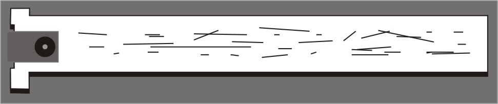
Figure 12: Hook RuleIt is used to measure the depth of narrow slots and small diameter holes where the standard rule is too wide to be used.
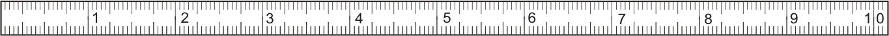
Figure 13: Narrow RuleIt can be bent to the contour of arcs and curved lengths permitting measurements impossible to obtain with a rigid rule.
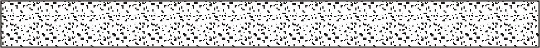
Figure 14: Flexible RuleIt is used to measure grooves, recesses, keyways, and short lengths from shoulders.
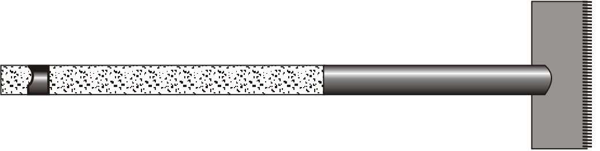
Figure 15: Rule with HolderTapes are another form of line graduated measuring rule that have retractable long length of metal tape. These are more practical for making long measurements. It is a common measuring device used by technicians. It is usually 72 inches long and is used to make long measurements. When not in use, the tape rolls back into the holder. When using these tapes for measurements, be sure to keep the flexible tape on and flush against the line of measurement. This model has a lock to prevent the tape from moving. Its flexibility allows it to measure round, contours, and other odd-shapes. When making inside measurements, add the measurement of the tape case, usually marked on the case.
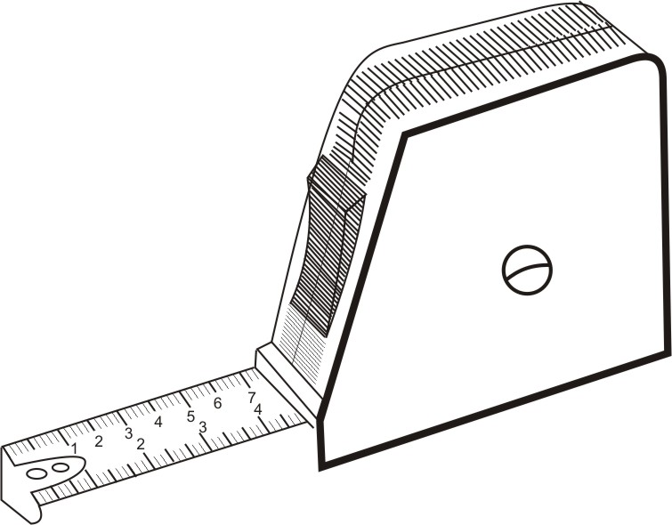
Figure 16: Flexible tapeFor external measurement Locate the hook over one end and pull the case to extend the tape, keeping it flat on the work. Read off against the other edge of the workpiece as shown in the figure and for internal measurement with the back of the case touching one surface, extend the tape. Read off the measurement where the tape enters the case and add the width of the case for the case itself.
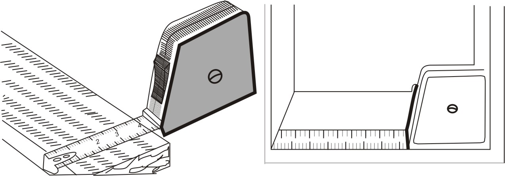
Figure 17: Taking an external and an internal measurementWrap the flexible tape around the workpiece and align the two meeting edges. Take the 2in. graduation as your reference point and read off the measurement alongside it. In the end deduct 2in from the calculation to measures the circumference.
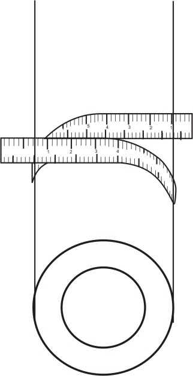
Figure 18: Measuring the cylinder| ← Tutorial 1 | Tutorial 3 → |